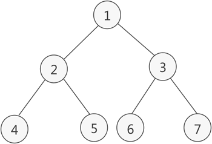

阅读：0
作者：解学武
二叉树中序遍历（递归和非递归）算法及C语言实现
二叉树的中序遍历，指的是从根结点出发，按照以下步骤访问二叉树中的每个结点：
举个简单的例子，下图是一棵二叉树：
中序遍历这棵二叉树的过程是：
对于链表存储的二叉树，递归实现中序遍历的 C 语言程序为：
非递归中序遍历一棵树二叉树，具体有两种实现方案：
对于顺序表存储的二叉树，以上两种方案对应的 C 语言程序分别是：
对于链表存储的二叉树，以上两种方案对应的 C 语言程序分别是：
- 先进入当前结点的左子树，以同样的步骤遍历左子树中的结点；
- 访问当前结点；
- 最后进入当前结点的右子树，以同样的步骤遍历右子树中的结点。
举个简单的例子，下图是一棵二叉树：

图 1 二叉树
图 1 二叉树
中序遍历这棵二叉树的过程是：
进入结点 1 的左子树，访问左子树中的结点；
进入结点 2 的左子树，访问左子树中的结点；
试图进入结点 4 的左子树，但该结点没有左子树；
访问结点 4；
试图进入结点 4 的右子树，但该结点没有右子树；
访问结点 2；
进入结点 2 的右子树，访问右子树中的结点；
试图进入结点 5 的左子树，但该结点没有左子树；
访问结点 5；
试图进入结点 5 的右子树，但该结点没有右子树；
访问结点 1；
进入结点 1 的右子树，访问右子树中的结点；
进入结点 3 的左子树，访问左子树中的结点；
试图进入结点 6 的左子树，但该结点没有左子树；
访问结点 6；
试图进入结点 6 的右子树，但该结点没有右子树；
访问结点 3；
进入结点 3 的右子树，访问右子树中的结点；
试图进入结点 7 的左子树，但该结点没有左子树；
访问结点 7；
试图进入结点 7 的右子树，但该结点没有右子树；
最终，中序遍历图 1 中的二叉树，访问各个结点的顺序是：4 2 5 1 6 3 7
递归中序遍历二叉树
对于顺序表存储的二叉树，递归实现中序遍历的 C 语言程序为：
void INOrderTraverse(BiTree T, int p) {
//递归遍历左子树
if (((2 * p + 1) < NODENUM) && (T[2 * p + 1] != 0)) {
INOrderTraverse(T, 2 * p + 1);
}
//访问当前结点
printf("%d ", T[p]);
//递归遍历右子树
if (((2 * p + 2) < NODENUM) && (T[2 * p + 2] != 0)){
INOrderTraverse(T, 2 * p + 2);
}
}
对于链表存储的二叉树，递归实现中序遍历的 C 语言程序为：
void INOrderTraverse(BiTree T) {
if (T) {
INOrderTraverse(T->lchild);//遍历当前结点的左子树
printf("%d ",T->data); //访问当前结点
INOrderTraverse(T->rchild);//遍历当前结点的右子树
}
}
非递归中序遍历二叉树
递归的底层实现借助的是栈存储结构，因此我们可以自己模拟出一个栈结构，以非递归的方式实现二叉树的中序遍历。非递归中序遍历一棵树二叉树，具体有两种实现方案：
- 方案一：从根结点开始，不断地遍历当前结点的左子树并将该结点压入栈中，直至不再有左子树。然后从栈顶取出一个结点并访问它，然后将它的右孩子压入栈中，继续以同样的方式遍历它的右子树；
- 方案二：和方案一唯一的不同之处在于，压入栈中的只会是每个结点的左孩子，右孩子不需要入栈。
对于顺序表存储的二叉树，以上两种方案对应的 C 语言程序分别是：
//全局变量，记录栈顶的位置
int top = -1;
//前序遍历使用的入栈函数
void push(BiTree a, int elem) {
a[++top] = elem;
}
//弹栈函数
void pop() {
if (top == -1) {
return;
}
top--;
}
//拿到栈顶元素
int getTop(BiTree a) {
return a[top];
}
//方案1
void InOrderTraverse1(BiTree Tree) {
//模拟栈，记录入栈结点所在顺序表中的下标
int ad[NODENUM] = { 0 };
int p;
push(ad, 0);//根节点的数组下标入栈
//直至栈为空，中序遍历才结束
while (top != -1) {
//不断的将各个结点的左孩子入栈
while ((p = getTop(ad)) < NODENUM) {
if (Tree[p] == 0) {
break;
}
push(ad, 2 * p + 1);
}
pop();//栈顶的下标肯定超出了 NODENUM 指定范围，直接弹出
//不再有左子树之后，访问当前结点，并将其右子树入栈
if (top != -1) {
p = getTop(ad);
pop();
printf("%d ", Tree[p]);
push(ad, p * 2 + 2);
}
}
}
//方案2
void InOrderTraverse2(BiTree Tree) {
//模拟栈，记录入栈结点所在顺序表中的下标
int ad[NODENUM] = { 0 };
int p = 0;
while (p < NODENUM || top != -1) {
//将每个结点的左孩子入栈
if (p < NODENUM && Tree[p] != 0) {
push(ad, p);
p = p * 2 + 1;
}
else
{
//如果栈空，则中序遍历结束
if (top == -1) {
break;
}
//访问该结点，并将其右孩子的下标赋值给 p，继续遍历右子树
p = getTop(ad);
pop();
printf("%d ", Tree[p]);
p = p * 2 + 2;
}
}
}
对于链表存储的二叉树，以上两种方案对应的 C 语言程序分别是：
//全局变量，表示栈顶
int top = -1;
//前序和中序遍历使用的进栈函数
void push(BiTNode** a, BiTNode* elem) {
a[++top] = elem;
}
//弹栈函数
void pop() {
if (top == -1) {
return;
}
top--;
}
//查看栈顶元素
BiTNode* getTop(BiTNode** a) {
return a[top];
}
//方案1
void InOrderTraverse1(BiTree Tree) {
BiTNode* a[20];//定义一个顺序栈
BiTNode* p;//临时指针
push(a, Tree);//根结点进栈
while (top != -1) {//top!=-1说明栈内不为空，程序继续运行
while ((p = getTop(a)) && p) {//取栈顶元素，且不能为NULL
push(a, p->lchild);//将该结点的左孩子进栈，如果没有左孩子，NULL进栈
}
pop();//跳出循环，栈顶元素肯定为NULL，将NULL弹栈
if (top != -1) {
p = getTop(a);//取栈顶元素
pop();//栈顶元素弹栈
printf("%d ", p->data);
push(a, p->rchild);//将p指向的结点的右孩子进栈
}
}
}
//方案2
void InOrderTraverse2(BiTree Tree) {
BiTNode* a[20];//定义一个顺序栈
BiTNode* p;//临时指针
p = Tree;
//当p为NULL或者栈为空时，表明树遍历完成
while (p || top != -1) {
//如果p不为NULL，将其压栈并遍历其左子树
if (p) {
push(a, p);
p = p->lchild;
}
//如果p==NULL，表明左子树遍历完成，需要遍历上一层结点的右子树
else {
p = getTop(a);
pop();
printf("%d ", p->data);
p = p->rchild;
}
}
}
本节给出的都是实现中序遍历的 C 语言关键代码，对于中序遍历顺序表中存储的完全二叉树，可以结合《二叉树的顺序存储结构》一节给出的完整程序；对于中序遍历链表中存储的二叉树，可以结合《二叉树的链式存储结构》一节中给出的完整程序。也可以猛击这里下载完全源码。